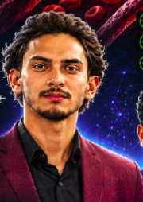
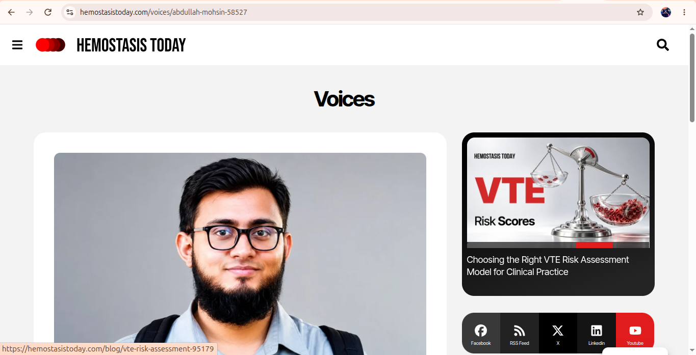

Abdullah Mohsin
Lead DVT Researcher & SE Student
UIT University Karachi
Project focus
Ultrasound Deep Learning, Dataset Architecture & DAIT Framework
Software Engineering Technology · AI Researcher · Technology Builder
Department of Software Engineering, UIT University, Karachi, Pakistan
I explore the intersection of software engineering, artificial intelligence, research, and innovation. My current research focus is Deep Vein Thrombosis (DVT), ultrasound image analysis, and open datasets that can support further study of automated detection.
Software Engineering · UIT University
Deep Artificial Intelligence for Thrombosis
B.Tech Software Engineering student at UIT University Karachi conducting foundational research in computerized medical ultrasound analysis.
My name is Abdullah Mohsin. I am a B.Tech Software Engineering student at UIT University in Karachi, Pakistan. My research focuses on Deep Vein Thrombosis (DVT), ultrasound image analysis, machine learning, and the development of datasets that may support research into automated DVT detection.
I have worked on organizing thrombus and non-thrombus ultrasound image data, studying anatomical regions of the lower limb, and exploring relevant clinical and imaging characteristics. I am continuing to develop my research through dataset annotation, validation, collaboration, and further data collection across clinical facilities.
Through the DAIT (Deep Artificial Intelligence for Thrombosis) framework, our team investigates automated classification pipelines capable of differentiating fully compressible veins from non-compressible thrombi, optimizing neural networks for edge clinical hardware.
Department of Software Engineering, Karachi, Pakistan
Pursuing Bachelor of Technology (B.Tech) degree in Software Engineering with direct focus on applied machine learning, computer vision, and medical ultrasound informatics.
Meet the collaborators and their focus areas across the DAIT project.

Structured exploration of venous ultrasound diagnostics, deep learning algorithms, and anatomical feature extraction.
Exploring Deep Vein Thrombosis research through vascular ultrasound imagery, with awareness of the serious complications associated with this condition.
Developing binary automated classification models distinguishing true intraluminal clots from normal venous flow.
Processing 2D B-mode ultrasound frames, speckle noise filtering, vein wall border detection, and echogenicity profiling.
Training custom convolutional neural networks (CNNs), attention backbones, and transfer learning models calibrated for ultrasound.
Curating, balancing, and standardizing raw ultrasound scans into verifiable training, testing, and benchmark splits.
Segmenting and indexing scans by four key vascular stations of the lower limb to account for anatomical caliber variances.
Establishing multi-reviewer annotation guidelines, verification against clinical ultrasound notes, and metadata integrity.
Standard compression ultrasound (CUS) focuses on these pivotal lower extremity vascular coordinates:
In clinical compression ultrasound, a patent vein's anterior and posterior walls fully touch (coapt) under probe pressure. An intraluminal thrombus prevents luminal coaptation. Test both modes interactively below:
Illustrative example of a vein with a modeled intraluminal thrombus.
Illustrative long-axis vein view · not a diagnostic image
Curated lower-extremity ultrasound imagery, DICOM volume repositories, and multicenter clinical surveys.
Collection totals are grouped into cases and image frames for the thrombus and non-thrombus categories.
Researcher-reported collection of 2,341 cases, categorized as thrombus or non-thrombus.
Raw photographic evidence, hospital survey coordination, and multi-center sheets.
Open the shared folder of research findings, analysis, and supporting materials.
Digital Imaging and Communications in Medicine (DICOM) training volume archive.
Independent evaluation archive for algorithmic testing and model generalization.
Project execution files and demonstrations shared in Google Drive.
View shared images from project activities, collaborations, and events.
European innovation initiative researching automated thrombosis diagnostic tech.
Ultrasound in Medicine & Biology peer publication on vascular diagnostics.
Academic publication index and citations for Abdullah Mohsin.
Clinical demonstrations and presentations of ultrasound thrombosis screening.
Selected activities in medical image collection, dataset work, research communication, and open-source development.

The feature discusses Abdullah's DVT research interests and a research conversation with a collaborator from Giza, Egypt. Its overview describes an AI-assisted research concept examining ultrasound characteristics such as vein compressibility, intraluminal echoes, and Doppler flow.
The article describes a research concept; it should not be read as evidence of clinical validation, diagnostic accuracy, or a certified medical device.
Visited approximately 17 hospitals in connection with research and medical image dataset activities.
Published lower-limb venous ultrasound dataset for machine-learning research with 2,341 reported cases across four anatomical regions.
Lead developer for DAIT Vascular Care AI Assistance workspace and deep learning pipeline architecture in collaboration with research team (Abdullah Mohsin, Rayan, Mohib Ullah, Arham Shah).
Analyzed training (Zenodo 17659415) and testing (Zenodo 17664207) DICOM archives, validating ultrasound image acquisition parameters and multi-class compressibility assessments.
Work and areas of exploration across healthcare, intelligent systems, resource management, and financial technology.
Ongoing work in ultrasound image analysis, computer vision, deep learning, dataset development, and DVT research.
Explore the datasetA space-focused team concept exploring how astronaut suit status could be monitored and communicated to support awareness during a mission.
Team project conceptExploring AI agents that can interpret objectives, plan tasks, use tools, and coordinate multi-step business workflows with human oversight.
Ongoing explorationInterest and involvement in banking technology, financial systems, digital transformation, and technology-enabled financial services.
Focus areaCollaborative efforts in practical technology learning, project development, and community building.
A project and internship initiative focused on collaborative technology learning and practical project experience.
Visit ProjectInternshipGitHub organization for the DAIT thrombosis research project and its related software repositories.
Visit DVT-PROJECTExplore the Optinum-AI organization and its projects on GitHub.
Visit Optinum-AIResearch evidence, project images, implementation files, findings, and the published dataset.
Research documentation, hospital visits, achievements, certificates, and supporting evidence.
Open folder GalleryResearch activities, hospital visits, events, collaborations, and project moments.
Open folder DownloadsProject execution files and demonstrations shared in Google Drive.
Open folder ResearchOpen the shared folder of research findings, analysis, and supporting materials.
Open folder KaggleMedical ultrasound images categorized for thrombus versus non-thrombus research.
Explore datasetSelected research, collaboration, and innovation activities. Dates and supporting details can be added as they are confirmed.
Participated in Rocketthon as part of a team exploring a space-focused concept for monitoring astronaut suit status.
Visited approximately 17 hospitals in connection with medical research and dataset-related activities.
Continued research activities involving ultrasound imagery, DVT, computer vision, and dataset development.
Contributing to collaborative learning, project development, and community-oriented technology initiatives.
Organized by the domains I work in and explore, without implying specific tools or technologies not listed here.
I believe in collaboration, knowledge sharing, research, and building technology-driven communities.
Connect with the technology and research community.
Join communitySend a message or share feedback using the Google Form.
Open feedback formReach out about research, AI, entrepreneurship, or technology projects.
Compose in GmailFor research collaboration, software, AI, or technology projects, use the direct contact details below.
This portfolio is static and cannot send messages itself. Open a Gmail draft or copy the address into the email service you use.
abdullahmohsinune@gmail.com